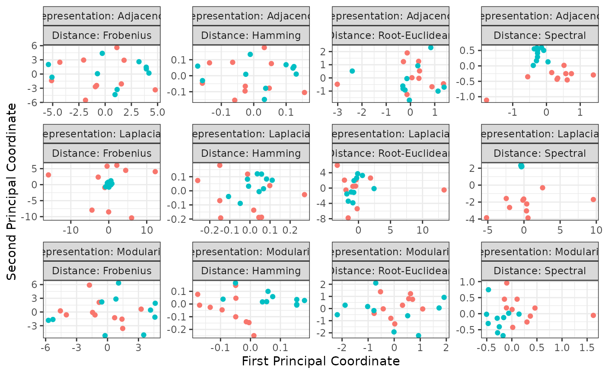
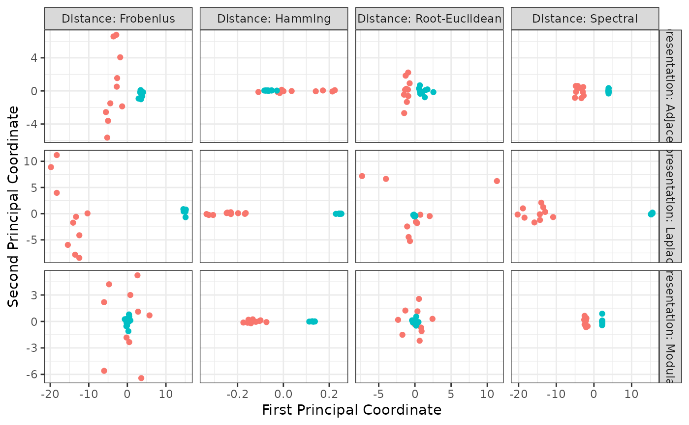

This function generates 2-dimensional plots of samples of networks via multi-dimensional scaling using all representations and distances included in the package.
Arguments
- object, x
A list containing two samples of network-valued data stored as objects of class
nvd.- memberships
An integer vector specifying the membership of each network to a specific sample. Defaults to
rep(1, length(nvd))which assumes that all networks in the inputnvdobject belong to a single group.- method
A string specifying which dimensionality reduction method to use for projecting the samples into the cartesian plane. Choices are
"mds","tsne"or"umap". Defaults to"mds".- ...
Extra arguments to be passed to the plot function.
Value
Invisibly returns a ggplot object. In
particular, the data set computed to generate the plot can be retrieved via
$data. This is a tibble containing the following
variables:
V1: the x-coordinate of each observation in the plane,V2: the y-coordinate of each observation in the plane,Label: the sample membership of each observation,Representation: the type of matrix representation used to manipulate each observation,Distance: the distance used to measure how far each observation is from the others.
Examples
gnp_params <- list(n = 24L, p = 1/3)
degree_params <- list(out_degree = rep(2, 24L), method = "configuration")
x <- nvd(sample_size = 10L, model = "gnp", !!!gnp_params)
#> ℹ Calling the `tidygraph::play_gnp()` function with the following arguments:
#> • n: 24
#> • p: 0.333333333333333
#> • directed: TRUE
#> • loops: FALSE
y <- nvd(sample_size = 10L, model = "degree", !!!degree_params)
#> ℹ Calling the `tidygraph::play_degree()` function with the following arguments:
#> • out_degree: 2, 2, 2, 2, 2, 2, 2, 2, 2, 2, 2, 2, 2, 2, 2, 2, 2, 2, …, 2, and 2
#> • method: configuration
#> • in_degree: NULL
mb <- c(rep(1, length(x)), rep(2, length(y)))
z <- as_nvd(c(x, y))
ggplot2::autoplot(z, memberships = mb)

plot(z, memberships = mb)
